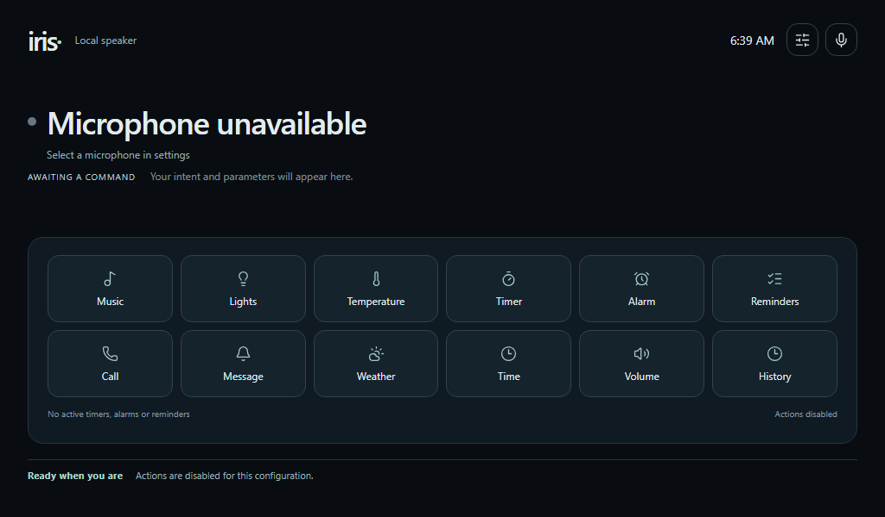
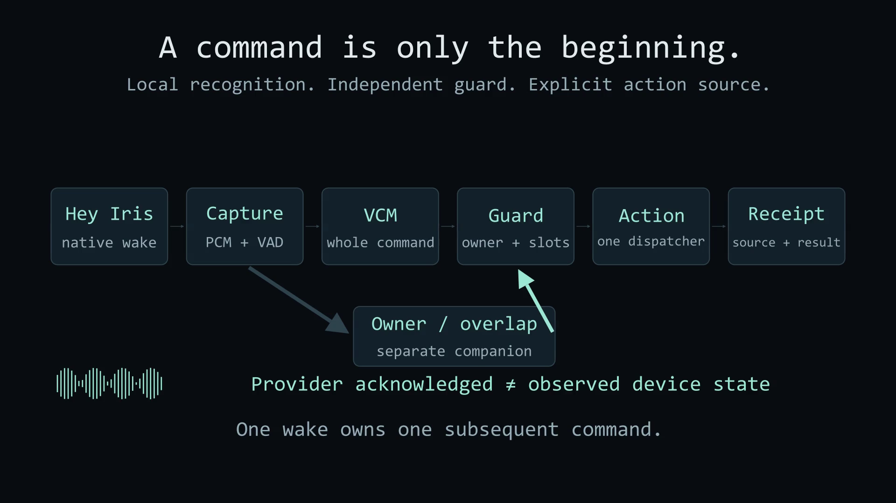
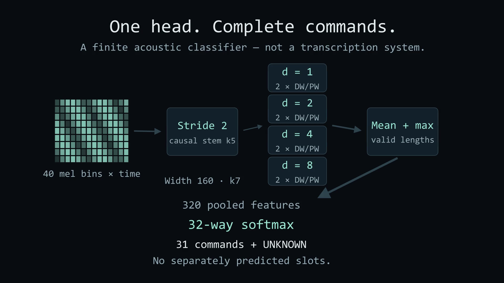

A LOCAL, FINITE VOICE ASSISTANT
Say Hey Iris.
See the result.
Give a supported command. Iris recognizes it locally and shows the result — including when it is only synthetic.
No transcript. No LLM.
Optional services for actions and external data.

Finite scope is a feature boundary, not a promise of human reliability.
02 / FROM SOUND TO A RECEIPT
Recognition is not an action.

Wake acknowledgments: Yes / Hmm / Yeah / Here. Host-owned playback; replays stay silent.
03 / THE ORIGINAL OPTIONB MODEL
One head. Complete commands.

Loading companion footprints…
04 / FINITE VALUES, USEFUL SURFACES
Ten use cases. One contract.
Static storyboard example only. No recognition, request, job or device change occurs in this deck.
All ten categories / complete 31-command coverage
| Category | Complete commands | Source boundary |
|---|
05 / MEASURED, NOT IMPLIED
Keep the denominators visible.
Frozen data
| Split | Human | Synthetic |
|---|
Original fit
Exact CPU refit unverified; CUDA epoch28.
Human command policy
| Cohort | Correct | Wrong | Negatives |
|---|
Desktop · p50 / p95
Not measured
Timing excludes speaking, file decode, wake/VAD waiting, gateway, UI, feedback and providers.
06 / RUN THE ARTIFACT. READ THE LIMITS.
A small model, an explicit boundary.
Check → infer → measure
python inference.py --check --no-setup python inference.py --mode ui --no-setup python benchmark.py --model-choice epoch44 \ --manifest PATH --data-root ROOT \ --output NEWDIR --repeats 3
Install the pinned runtime first. Setup may use the network; recognition is local. Online providers remain optional.
Full input-preparation and pinned original-source reproduction instructions are linked below. A published-artifact benchmark does not prove exact retraining.
Before you rely on it
- Finite wording/value scope, not arbitrary speech.
- Synthetic wake smoke gate failed; no replacement promoted. Human live-microphone and Pi qualification remain unmeasured.
- Thermostat targets are synthetic; observed sensors stay separate.
- External failures must retain provenance; no invented current weather.
Sources & rights
Composite dataset DOI 10.57967/hf/10723; exact primary and supplemental revisions in the source audit. Consent and research-use restrictions remain.
Native HTML + pre-rendered Manim / manim-slides. All viewer assets local. No microphone, backend, Python or GPU required.